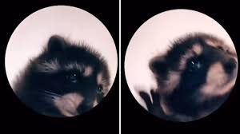

Welcome to David's Webpage
Navigation
Home
Boards
Game page
Input Validation page
The class is summer 2024. My teacher is Prof. Prater.

Start
Stop
Favorite The Chronicles of Narnia films
Ranking
Name
Year
1
The Lion, the Witch and the Wardrobe
2005
2
The Voyage of the Dawn Treader
2010
3
Prince Caspian
2008
4
The Silver Chair
2024